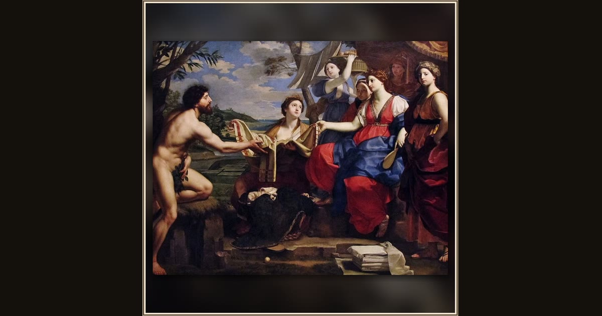

Ulysses and Nausicaa
Michele Desubleo · after 1654 · Museo e Real Bosco di Capodimonte · Naples, Italy
Kneeling with an olive branch, the shipwrecked Ulysses asks Princess Nausicaa for help — and she offers the ragged stranger fine clothes instead of fear. Explore its place in Book VI of the Odyssey.